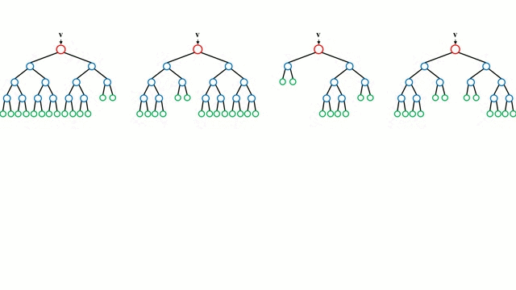

Regression with Random Forest

What exactly is Random Forest? How to implement it?
In this post, we'll have a look at machine learning process with focus on Random Forest algorithm. Most common ML steps are:
- Get the data
- Analyse the data
- Transform data
- Shortlist algorithms
- Tune algorithm
- Evaluate
In the 4th step, random forest was a clear winner. A little bit on Random Forest first and then we move on to the code.
Random forest are one of the most powerful and versatile ML algorithms. It is an ensemble technique i.e. instead of a single regressor, several of them are used. It trains various decision trees on subsets of the training data and then averages out the result of trees for prediction. Instead of putting resources in training a single strong decision tree, a set of decision trees (hence the name forest) which are strong for a small subset of data are trained. An important reason why it works so well is that it can easily map complex relationships between attributes.
The image example here shows how it works in case of classification. Difference between classification and regression is the way of selecting the prediction. For example, regression can use mean of all predictions while classification can choose the mode class in all classifiers.
The loading part is quite straight forward, by using dataframe from pandas. Eyeball the data to have a quick idea about the data. df.info() gives us information about data types, missing values, column names, etc. df.describe() gives a statistical summary of numerical features.
Histograms gives information about distribution of data, any outliers, missing data and abnormal values.
Correlation matrix is important as it helps to determine important features and useless features. Do not forget that
Correlation does not mean causation.
From correlation values, CHAS and DIS have small correlation with our target feature, so we drop it. After this, split into training and test data.
Using StandardScaler, we scale data as these algorithms are pretty sensitive to scaling.
Shortlist several regressors that usually perform well to shortlist the best model. After cross validating each regressor, it outputs a message that gives mean error and standard deviation of error in brackets.
Notice that random forest and extra trees regressor give almost half the error rate of decision tree. Extra Trees Regressor gives the best performance. Extra Trees Regressor or extremely randomized trees are a modified version of random forest as they are more randomized. Due to high randomisation, they tend to be faster and work well with noisy data. Further tune this algorithm now.
For tuning, grid search cross validation and randomized search cross validation are pretty useful. In grid search cross validation, provide a list of values for hyperparameters. It runs cross validation for each and every value. Hence, it is slower. Randomized search cross validation selects any random set of hyperparameters and run cross validation. Both of them fit the regressor to lowest error value, randomized search cross validation is quicker. Since, it is randomized, it can miss some better combinations but most of the times it gives least error. On timing it, randomized search cross validation is more than twice as fast as grid search cross validation with similar error rate.
Now, evaluate and save the model. For evaluation, use mean square error. Through this post, now you can get your own random forest algorithm up and running quickly.
Accompanying GitHub repository link.
{kind=link}